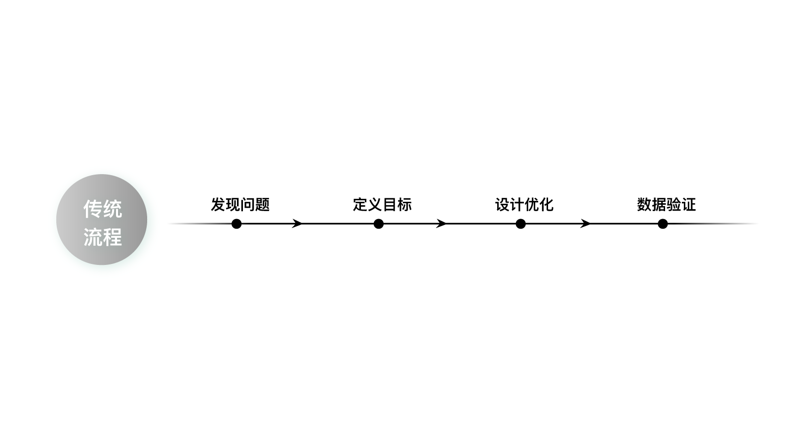
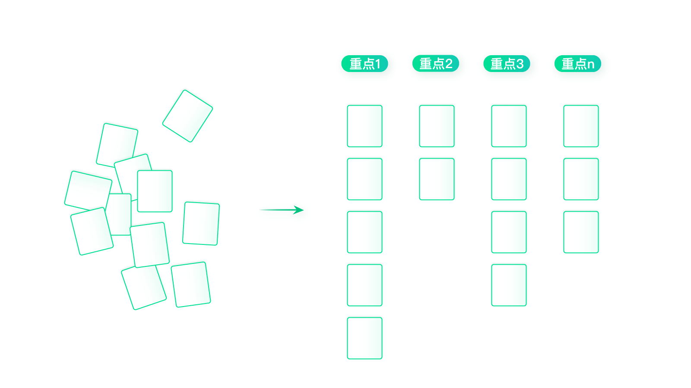
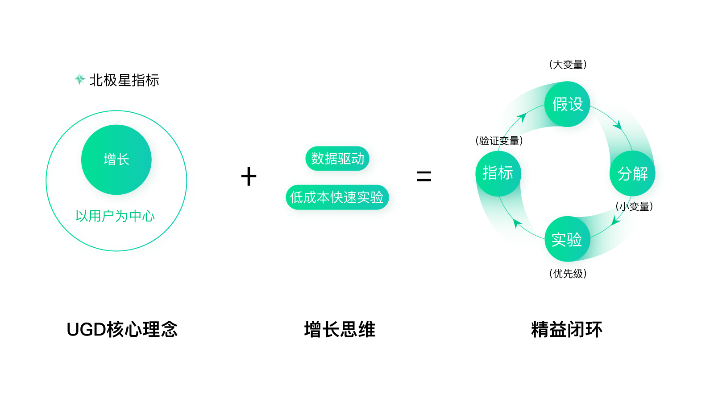
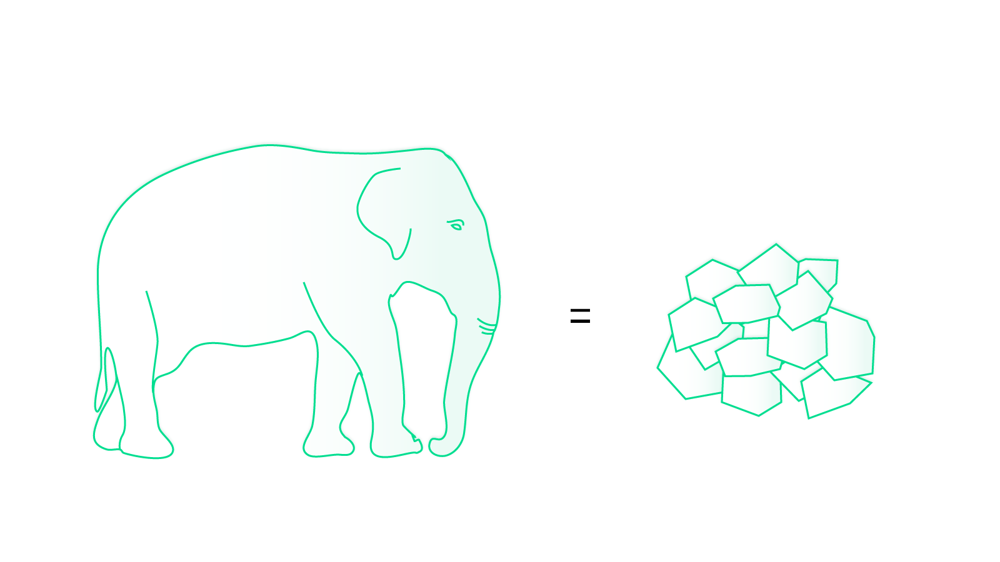
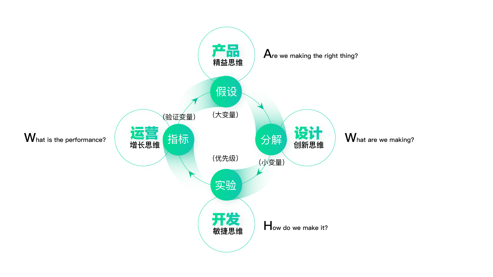
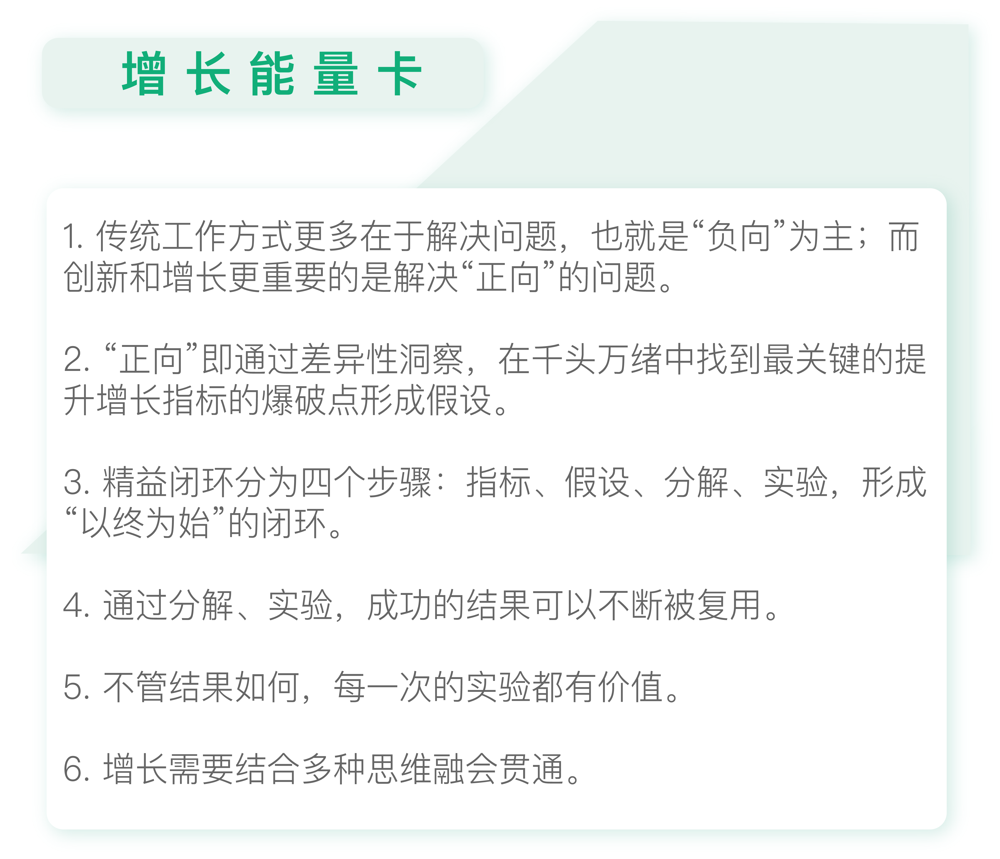

- 00 开篇词 人人都是增长官.md.html
- 01 预习 增长小白如何“弯道超车”？.md.html
- 02 预习 如何理解“增长”？.md.html
- 03 预习 不同职能如何做好增长？.md.html
- 04 预习 做增长如何处理职能间的矛盾？.md.html
- 05 正确目标找不对，天天加班也枉然.md.html
- 06 活学活用北极星指标.md.html
- 07 OKR如何助力增长？.md.html
- 08 不懂用户调研？那就对了！.md.html
- 09 调研目标：在差异性洞察中找到爆破点.md.html
- 10 数据分析：在“花式对比”中发现玄机.md.html
- 11 用户分类：围绕北极星指标细分人群.md.html
- 12 用户访谈：像侦探一样寻找破案线索（上）.md.html
- 13 用户访谈：像侦探一样寻找破案线索（下）.md.html
- 14 提炼用户差异，发现增长契机.md.html
- 15 挖掘产品优势，打破增长瓶颈.md.html
- 16 定位营销差异，抢占用户心智.md.html
- 17 一级方向：找到增长爆破点.md.html
- 18 B端产品如何调研？.md.html
- 19 全局规划增长机会.md.html
- 20 统筹全局的用户增长地图.md.html
- 21 案例解析：定义关键增长指标.md.html
- 22 正负双向洞察，找准切入点.md.html
- 23 二级机会：制定增长策略.md.html
- 24 为一家濒临破产的公司制定增长策略（上）.md.html
- 25 为一家濒临破产的公司制定增长策略（中）.md.html
- 26 为一家濒临破产的公司制定增长策略（下）.md.html
- 27 为什么指标数据怎么优化都不提升？.md.html
- 28 案例解析：打造增长闭环（上）.md.html
- 29 案例解析：打造增长闭环（下）.md.html
- 30 案例解析：唤醒沉睡用户（上）.md.html
- 31 案例解析：唤醒沉睡用户（下）.md.html
- 32 没有分解，就无缘增长.md.html
- 33 四个要点颠覆传统需求文档.md.html
- 34 三级落地：无限场景应用.md.html
- 35 手把手教你设计一次成功的实验（上）.md.html
- 36 手把手教你设计一次成功的实验（下）.md.html
- 37 积少可成多，别针换别墅.md.html
- 38 四级延续：增长组件库案例.md.html
- 39 以用户为中心增长.md.html
- 增长导航图 增长专栏的知识架构是怎样的？.md.html
- 尾声 结束意味着新的开始.md.html
- 预习答疑 你需要一张思维导图吗？.md.html
- 捐赠
27 为什么指标数据怎么优化都不提升？
你好，我是刘津。
结束了前面的增长方向和增长策略的内容，今天我们开始学习落地执行方面的知识，也正式进入了第四个模块：打造百发百中的增长闭环。
说到“百发百中”，你可能会怀疑，真的有这么神奇吗？现实工作中遇到的经常是数据怎么优化都不提升的情况吧。
传统方法为什么不灵了？
其实只要方法对了，“百发百中”的增长是可以成为常态的。你之所以觉得这很不可思议，是因为我们传统的工作方法并不是以增长为目的，而是以改进问题为目的。
这就是我前面说过的“正向”和“负向”。
传统工作方式更多在于解决问题，也就是“负向”为主。而创新和增长更重要的是解决“正向”的问题，即通过洞察发现差异化的优势，带来四两拨千斤的增长效果。这可比单纯的改进问题含金量高多了，自然价值也大得多。

我们先来看看传统流程。
首先，是发现问题，这里包括用户反馈的问题、业务提出的问题、技术bug等等。罗列出各种问题后，把这些问题做个归类，归纳出几类重点。然后围绕这几项重点提出改进建议。落地执行后，再看数据反馈情况。

这就是传统的解决问题的思路，虽然看上去无懈可击，却并不高效。
就像我在前面内容里不断提到的：我们并非要面面俱到地解决所有问题，也不是要把自认为最好最专业的带给用户；而是通过差异性洞察，在千头万绪中找到最关键的足以影响到增长的爆破点。
所以，传统工作方式耗时耗力，却未必能带来关键指标的提升，就是这个道理。大部分人都在急着填补目前的漏洞，不是在优化功能、性能，就是在追赶竞品，每天都在“救火”。但如果沉下心来想想更关键的起决定性作用的事情，你也许就能出奇制胜。
以终为始打造高效的增长闭环
既然传统的工作方式存在弊端，那我们应该如何改变呢？这里给你介绍一个新的思路，我把它称为“精益闭环”。

精益闭环秉承了“以用户为中心增长”的核心理念。“以用户为中心增长”我想你已经不陌生了，就是通过深入的用户洞察找到用户最关心的、最能带来增长的爆点。此外，再结合增长黑客最爱的增长思维，即“数据驱动+低成本快速实验”，形成新的工作流程。
精益闭环分为四个步骤，分别是：指标、假设、分解、实验。
1.指标
指标主要是通过北极星指标分解得来的。具体可参考用户增长地图中的关键指标。当然，也需要考虑具体场景。比如首页改版，既需要考虑用户旅程中对应的关键指标（比如转化率），也需要考虑和首页相关的指标（比如跳出率）。
2.假设
假设是通过洞察得到的可能提升指标的方式。从指标到假设，可以帮助我们避免做太多无用功，而是专注在与增长相关的关键问题上。
举个例子，有个朋友想改进一个营销落地页面，通过头脑风暴大家一起提出了10项改进建议，他问我这样是否可以？我问他这个页面的指标是什么，他说是提升转化率。我又问这10项改进建议，哪些和提升转化有关，他看了一下，说只有2个。这样就可以优先做这两个改进，剩下的8个往后排排。
3.分解
每条假设都可以分解成若干个变量，有助于量化结果。之所以要再分解，是因为我们做的很多工作都未必能带来关键指标的提升，这让我们误以为很多东西是难以被量化的，尤其是偏创意、设计类的工作。但其实只要学会科学的分解，任何事情都是可以被量化的。
你还记得曹冲称象的故事吗？大象很大，但是秤很小，所以无法称量大象的体重。但是曹冲想了个很聪明的方法，把大象转换成同重量的石块，然后一一称量石块的重量，再累加就可以了。这不就是“分解”后量化的一个极佳的例子吗？

所以，当我们无法验证数据结果，或数据结果不好的时候，我们就可以通过分解去探寻究竟，看看到底做什么事情会带来数据提升，做什么事情会导致数据下降。这样就把增长从偶然、撞大运变成了一件常规的事情。
举个例子，假设你做了一次大改版，数据没有提升，这是因为在这次改版中你做的事情实在太多了。你可能改进了100个地方，其中50个地方带来了提升，50个地方导致了下降，最终就互相抵消了。但是，如果你把完整的方案拆成100个变量，再去一一的看，你自然就知道哪个改进效果好，哪个改进效果不好，那么增长也就是板上钉钉的事情了。
通过分解，我们验证的结果可以被不断复用。
比如，你发现蓝色比红色效果好，A文案比B文案好等等，这些结论都是可以被复用到其它页面或类似的产品上的。但是如果用的是传统方式，你就无法判断出是因为什么导致了最后的结果好还是不好，所以也很难复用，这当然是十分低效的。
4.实验
在经过指标、假设、分解这三个步骤后，我们需要通过实验结果来验证每一个被测试的变量的效果。这里面会涉及到一些较专业的统计方面的知识，我在下一个模块会专门介绍。
实验的结果自然有好有坏，好的结果我们可以不断复用，不好的结果我们以后可以尽量避免。所以每一次的结果都是非常有价值的。
通过指标、假设、分解、实验，看实验结果是否提升了指标，形成了一个“以终为始”的闭环。“闭环”这个词你肯定不会陌生，现在很多商业大佬都在讲闭环，因为闭环是最高效的。
说到“以终为始”，我想举个例子来为你说明。
前几天，我参加了一个作者交流会，有幸听了知名畅销书作家李笑来老师的分享。他说，如果你想写一本畅销10年的书，你一定要先问问自己：这本书10年以后还会有人愿意看吗？如果答案是否定的，那他就不写。这不就是“以终为始”的思路吗？也就是你做一件事情之前，先想想你希望产生什么样的结果，然后再把这个结果作为目标倒推出你要做什么事情。
后来他又说，你想让你的书畅销，那你一定要找差异化，看看自己的内容和其他人的内容有什么区别，优势在哪里？比如，别人都在谈时间管理，而他在书里却提出了“时间是不可被管理”的新思想。这不就是我之前说的“差异化洞察”吗？所以说，做产品也好，做人也好，写书也好，道理都是一样的。
在实际工作中，精益闭环能引导我们找到可量化的与产品核心价值相关的指标；并以此为方向找到提升指标的假设，避免做无用功；再通过分解明确导致数据提升的原因，并且可持续复用；最重要的是，它能够驱动创新，改变了我们寻找问题、改进缺陷的旧有思路，而是把更多精力放在更直接的创造价值的事情上。
复合型思维解决多样性问题
精益闭环的思路不限产品阶段、不限优化对象、也不限产品、运营、设计等职能限制。它甚至可以帮你解决重要的人生决策问题。
它之所以能如此通用，是因为本质上它是跨界产物，它既包含了增长思维，又包含了精益思维，还有创新思维和敏捷思维。而做增长，恰恰需要结合多种思维，融会贯通。

在下一讲，我会为你讲解我工作中遇到的实际案例。

思考题
审视一下你过去的工作方式，看看是查缺补漏的情况多，还是创新、抓重点的情况多呢？
欢迎把你的思考和疑问通过留言分享出来，与我和其他同学一起讨论。如果你觉得有所收获，也欢迎把文章分享给你的朋友。
© 2019 - 2023 Liangliang Lee. Powered by gin and hexo-theme-book.